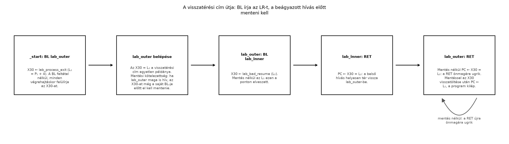

Az előző alfejezetben egy ciklus vezérlését elágazásokkal szerveztük meg. Most képzeljük el, hogy ugyanazt a rövid számítást több helyről szeretnénk elvégezni. A kód másolása helyett külön függvényt készítünk, amely a számítás után mindig az aktuális hívási hely után folytatja a végrehajtást.
Ehhez a célcím önmagában nem elég: a folytatás helyét is meg kell
őrizni. Az A64 ISA-ban, AArch64 környezetben ezt a
legegyszerűbb esetben a BL és a RET
utasításpár biztosítja.
Ebben az alfejezetben kizárólag A64-kód szerepel, Armv8-A alapprofillal, little-endian céllal. Nem építünk veremkeretet, és nem mentünk regisztert a memóriába. Olyan függvényt írunk, amely nem hív további függvényt, és csak az eredményregisztert módosítja.
Az előfeltétel az A64 ciklusszervezés és a korábban használt Linux syscall-konvenció ismerete.
A visszatérési cím (return address) a hívás
után végrehajtandó utasítás címe. A kapcsolóregiszter
(link register, LR) A64-en az X30 regiszter
szokásos szerepneve.
| A64 utasítás | Vezérlési hatás | Az A64 X30 változása |
|---|---|---|
B címke |
Ugrás a célhoz | Nem változik |
BL címke |
Ugrás a célhoz, a folytatás megjegyzésével | A hívást követő utasítás címét kapja |
RET |
Ugrás az X30 által megadott címre |
Nem változik |
Az A64 RET operandus nélküli alakja a
RET X30 rövid írásmódja. Az utasításnak van más általános
célú címregisztert megadó alakja is, de itt mindig az alapértelmezett
X30-at használjuk.
Fontos különbség a magas szintű elképzeléshez képest:
Az A64
BLnem készít automatikusan veremkeretet, és nem helyez visszatérési címet a veremre. Az A64RETsem olvas automatikusan címet a veremből.
Mindkét utasítás vezérlésátadást végez. A függvényparaméterek elhelyezése, a regiszterek megőrzése és a verem kezelése külön szoftveres szerződés feladata.
Legyen
az A64 BL utasítás címe, bájtban értelmezve. Az A64
utasítások hossza 4 bájt, ezért a közvetlenül következő utasítás
címe:
A hívás egyszerű, kivételmentes végrehajtásának hatása:
X30 megkapja
értékét;RET visszaugrik
-re.Az A64 BL közvetlen célját előjeles, 26 bites, 4 bájttal
skálázott relatív eltolás kódolja. A hívó utasításhoz képesti
tartomány:
Ez körülbelül ±128 MiB. A példákban a cél közeli, ugyanabban a kódszekcióban található címke. A nagy távolságú hívások linkeroldali megoldása nem része ennek a bevezetőnek.
A levélfüggvény (leaf function) nem hív
másik függvényt. Emiatt a saját végrehajtása során nincs olyan
beágyazott A64 BL, amely felülírná az érkezéskor kapott
X30 értékét.
Ez azonban nem jelenti azt, hogy minden levélfüggvény mentés nélkül megírható:
X30-at maga a függvény is felülírhatná;A mi levélfüggvényünknek nincs mentési kényszere,
mert csak az A64 W0 eredményregisztert módosítja, és az
X30-at érintetlenül hagyja.
A teljes hívási konvenció (calling convention) helyett most
az AAPCS64 egy szűk részét használjuk: egy 32 bites egész argumentum az
A64 W0-ban érkezik, és a 32 bites eredmény ugyanott
távozik. Az AAPCS64 regiszterszerződés később
pontosan meghatározza a további kötelezettségeket.
Munkakönyvtár: ~/arm-labor/a64/a021/ —
az alfejezet minden laborfájlja ide kerül, és minden parancs innen
futtatandó (a könyvtárrendet a Labor-alapkörnyezet alfejezet írja le).
mkdir -p ~/arm-labor/a64/a021
cd ~/arm-labor/a64/a021A számítás C-ben a uint32_t típusú bemenetre értelmezett
2u * n + 1u kifejezésnek felel meg. Az eredményt modulo
értelmezzük, tehát előjel nélküli, 32 bites aritmetikát használunk.
Mentsük a következő teljes programot lab-call.s
néven:
// A64 ISA / AArch64, Armv8-A, little-endian.
// A direktívák GNU as / AArch64 ELF kontextusúak.
.section .text
.p2align 2
.global _start
.global lab_after_call
.global lab_transform
.type _start, %function
_start:
mov w0, #21
bl lab_transform
lab_after_call:
mov x8, #93
svc #0
.size _start, . - _start
.type lab_transform, %function
lab_transform:
add w0, w0, w0
add w0, w0, #1
ret
.size lab_transform, . - lab_transform
.section .note.GNU-stack,"",%progbitsAz A64 W0 az X0 alsó 32 bites nézete. A
W0 írása az X0 felső 32 bitjét nullázza. A
visszatérési címet viszont a teljes, 64 bites A64 X30
hordozza: nem a W30 nézetet használjuk címként.
A program A64 immediate-operandusai kódolhatók:
MOV kis pozitív konstansa egyetlen, 16 bites
immediate-ot tartalmazó MOVZ megfelelő aliasalakjával
előállítható, nulla eltolással;ADD immediate-változata 12 bites előjel nélküli
értéket fogad, opcionális 12 bites balra tolással; itt az érték 1, az
eltolás 0;SVC immediate-mezője 16 bites, itt 0.A 93 az AArch64 Linux exit rendszerhívásának száma, nem
az A64 ISA tulajdonsága. A Linux syscall-azonosító az A64
X8-ba kerül; nem a SVC immediate-mezőjébe.
Cél: AArch64 Linux, QEMU user-mode, Ubuntu 24.04 x86_64 hoston, a könyv cross-eszközláncával.
# Target: qemu-user / AArch64 Linux, little-endian
aarch64-linux-gnu-as -march=armv8-a -EL -g \
-o lab-call.o lab-call.s
aarch64-linux-gnu-ld -m aarch64linux -e _start \
-o lab-call.elf lab-call.o
qemu-aarch64 ./lab-call.elf
lab_status=$?
printf 'Kilépési állapot: %s\n' "$lab_status"Mért eredmény (mérve: GNU as 2.42, GNU ld 2.42, QEMU 8.2.2): nincs szabványos kimenetre írás; a shell által megjelenített kilépési állapot 43. A 43 itt szándékosan számítási eredmény, nem laborhiba. A parancsokat ne olyan shellben futtassuk, amely nem nulla státusznál automatikusan megszakítja a parancssorozatot.
| Végrehajtási pont | A64 W0, előjel nélküli
érték |
A64 X30 |
|---|---|---|
| Közvetlenül a hívás előtt | 21 | A program nem támaszkodik rá |
Belépés a lab_transform függvénybe |
21 | lab_after_call címe |
Első A64 ADD után |
42 | Változatlan |
Második A64 ADD után |
43 | Változatlan |
A64 RET után |
43 | Változatlan |
A _start nem szokásos függvényhívással kapta meg a
vezérlést, ezért nem A64 RET utasítással fejezzük be. A
folyamatból a Linux rendszerhívással lépünk ki.
Először nézzük meg a tényleges utasításokat:
# Target: AArch64 ELF elemzése a hoston
aarch64-linux-gnu-objdump -d lab-call.elfKeressük meg az A64 BL utáni utasítást és a
lab_after_call szimbólumot: ugyanazt a folytatási pontot
kell jelölniük.
A következő munkafolyamat a függvény belépésénél megáll, majd végrehajtja a két összeadást és a visszatérést:
# Target: qemu-user / AArch64 Linux; helyi GDB-kapcsolat
qemu-aarch64 -g 1234 ./lab-call.elf &
lab_qemu_pid=$!
gdb-multiarch -q -batch ./lab-call.elf \
-ex 'target remote 127.0.0.1:1234' \
-ex 'break lab_transform' \
-ex 'continue' \
-ex 'info registers x0 x30 pc' \
-ex 'p/x (unsigned long)&lab_after_call' \
-ex 'si' \
-ex 'si' \
-ex 'si' \
-ex 'info registers x0 x30 pc' \
-ex 'continue'
wait "$lab_qemu_pid"
lab_status=$?
printf 'QEMU kilépési állapot: %s\n' "$lab_status"Mért ellenőrzések (GDB 15.1, QEMU 8.2.2):
X0 értéke 0x15, azaz
21;X30 megegyezik a lab_after_call
címével;pc néven mutat, a lab_after_call címén
áll;X0 értéke 0x2b, azaz 43.A GDB a pc-t <_start+8> alakban is
kiírhatja, mert a .size _start a teljes _start
blokkot lefedi, és a GDB a függvényszimbólumot preferálja; a számértéket
hasonlítsd a p/x &lab_after_call eredményével.
A konkrét betöltési címeket nem rögzítjük: a szimbólumokhoz való viszonyt ellenőrizzük. A GDB kimenetének formázása verziónként eltérhet.
Egyetlen A64 X30 regiszter csak egy visszatérési címet
tárol. Ha egy függvény újabb A64 BL utasítást hajt végre, a
korábbi cím elvész, hacsak előtte nem őrizte meg.
A következő szándékosan hibás, teljes program legyen
lab-nested-bad.s:
// A64 ISA / AArch64, Armv8-A, little-endian.
// Szándékos vezérlésihiba-demonstráció.
// Direktívák: GNU as / AArch64 ELF.
.section .text
.p2align 2
.global _start
.global lab_outer
.global lab_bad_resume
.type _start, %function
_start:
mov w0, #21
bl lab_outer
lab_process_exit:
mov x8, #93
svc #0
.size _start, . - _start
.type lab_outer, %function
lab_outer:
bl lab_inner
lab_bad_resume:
ret
.size lab_outer, . - lab_outer
.type lab_inner, %function
lab_inner:
add w0, w0, w0
add w0, w0, #1
ret
.size lab_inner, . - lab_inner
.section .note.GNU-stack,"",%progbitsA hiba levezetése:
| Lépés | A64 vezérlésátadás | A64 X30 utána |
|---|---|---|
| 1 | _start meghívja lab_outer-t |
lab_process_exit címe |
| 2 | lab_outer meghívja lab_inner-t |
lab_bad_resume címe |
| 3 | lab_inner visszatér |
Továbbra is lab_bad_resume címe |
| 4 | A lab_bad_resume alatti A64 RET
végrehajtódik |
Változatlan |
A negyedik lépésben az A64 RET saját magára
ugrik vissza. A program végtelen ciklusba kerül, miközben az
A64 W0 már helyesen 43. Az aritmetikai eredmény helyessége
tehát nem igazolja a vezérlés helyességét.
Az alábbi állapotábra egyetlen láncba köti a három tényt, amelyből a
hiba következik: (1) a BL feltétel nélkül
írja az X30-at, akkor is, ha abban még szükséges cím van;
(2) a visszatérési címnek érkezéskor egyetlen példánya van, az
X30; (3) ezért minden nem-levél függvénynek a saját
BL-je előtt meg kell őriznie a kapott
címet. Ez a harmadik pont a későbbi veremkezelés kiindulópontja: a
mentés helyét és formáját (legkisebb alakjában
STP X29, X30, [SP, #-16]! és
LDP X29, X30, [SP], #16) a Prológus és
epilógus alfejezet, a kötelezettség szerződéses alapját Az AAPCS64 regiszterszerződés adja.

# Target: qemu-user / AArch64 Linux, little-endian
aarch64-linux-gnu-as -march=armv8-a -EL -g \
-o lab-nested-bad.o lab-nested-bad.s
aarch64-linux-gnu-ld -m aarch64linux -e _start \
-o lab-nested-bad.elf lab-nested-bad.o
timeout --foreground 1s qemu-aarch64 ./lab-nested-bad.elf
lab_status=$?
printf 'Timeout utáni állapot: %s\n' "$lab_status"
aarch64-linux-gnu-objdump -d lab-nested-bad.elfMért eredmény: a GNU timeout 124-es
állapota. Az 1 másodperc működtetési korlát, nem teljesítménymérés. A
timeout önmagában még nem bizonyítja a feltételezett hibát.
A gyökérok ellenőrzéséhez az előző GDB-lépéssorban használjuk ezt az
ELF-fájlt, és a töréspont legyen lab_bad_resume. Az A64
pc és X30 ekkor azonos címet mutat (a mért
futásban 0x400014, ami &lab_bad_resume);
egyetlen utasításlépés után is ugyanaz marad mindkettő. A hibás
programot ne engedjük korlátlanul továbbfutni; a GDB kill
parancsával szándékosan megszakítható.
| Tünet | Hipotézis | Adatgyűjtés és célzott ellenpróba |
|---|---|---|
| A függvény számol, de nem tér vissza helyesen | A hívás A64 B, nem BL |
Disassembly; az X30 vizsgálata a belépésnél; csak a
hívó utasítást javítsuk |
| Beágyazott hívás után végtelen ciklus | A belső A64 BL felülírta az X30-at |
GDB-ben hasonlítsuk össze az X30-at a külső és belső
folytatási címekkel |
| A függvényből visszatér, de a folyamat végén hibázik | A _start A64 RET utasítással zárul |
Ellenőrizzük a kilépési útvonalat; használjuk a Linux
exit syscallt |
| A visszatérési cím váratlanul megváltozik | A kód az A64 X30-at vagy W30-at
munkaregiszterként használta |
Keressük meg a regiszter összes írását, majd különítsük el a számítást a vezérlési állapottól |
Nem általános javítás az A64 X30 átmásolása egy
tetszőleges másik regiszterbe. Tudnunk kellene, hogy a meghívott
függvény azt megőrzi-e, illetve nekünk kell-e megőriznünk annak eredeti
értékét.
A szabályos nem-levél függvény megoldásához a veremkeret, az AAPCS64 regiszterszerződés, valamint a prológus és epilógus együtt szükséges. Ezeket a könyv függvénykezelési fejezete tárgyalja; itt nem vezetünk be félkész mentési mintát.
1. (magyarázó, alapszint — cél: megértés-ellenőrzés)
Egy A64 BL a
címen áll, és a lab_transform függvényt hívja. Mi kerül az
A64 X30-ba? Miért nem helyettesíthető általában a hívás A64
B utasítással? Jelenti-e a levélfüggvény fogalma, hogy soha
nincs szükség regisztermentésre?
2. (implementációs, alapszint — cél: rutinépítés)
Készíts lab-two-calls.s fájlt a helyes példából. A belépési
pont egymás után kétszer hívja ugyanazt a levélfüggvényt, a második
hívás bemenete az első eredménye legyen. A lab_after_call
címkét a második hívás után helyezd el. Vezesd le és ellenőrizd a
kilépési állapotot.
3. (hibakeresési, középszint — cél: rutinépítés) A
hibás programban GDB-vel igazold az A64 pc és
X30 egyenlőségét a beragadó visszatérésnél. Ezután készíts
lab-nested-fixed.s változatot: a külső függvény saját maga
végezze el a számítást, belső hívás nélkül. Egyetlen szerkezeti
változtatást végezz: a beágyazott hívást váltsd ki a számítás törzsével.
Ellenőrizd a befejeződést is.
1. megoldás — Segítség. Az A64 utasítások mind
pontosan 4 bájt hosszúak — mi lesz a
című BL UTÁNI utasítás pontos címe? A B
utasítás táblázatát nézve: ír-e valaha X30-ba?
1. megoldás — Teljes megoldás. Az A64
X30 értéke
,
mert a hívó utasítás 4 bájtos. Az A64 B nem állítja be ezt
a címet, ezért a későbbi RET nem kap megfelelő visszatérési
információt. A levélfüggvény csak a további hívások hiányát jelenti;
megőrzendő regiszter használata ettől még mentést igényelhet.
2. megoldás — Segítség. A második
bl lab_transform ugyanazt a függvényt hívja, de már az ELSŐ
hívás W0 kimenetével, mint új bemenettel — mit ad
2*(2*21+1)+1?
2. megoldás — Teljes megoldás. Az A64 hívó kód lényegi része:
// A64 ISA / AArch64: részlet a lab-two-calls.s fájlhoz.
_start:
mov w0, #21
bl lab_transform
bl lab_transform
lab_after_call:
mov x8, #93
svc #0Az első eredmény 43, a második . Az egymás utáni hívások nem beágyazottak: az első már visszatért, mielőtt a második elkezdődik.
# Target: qemu-user / AArch64 Linux
aarch64-linux-gnu-as -march=armv8-a -EL -g \
-o lab-two-calls.o lab-two-calls.s
aarch64-linux-gnu-ld -m aarch64linux -e _start \
-o lab-two-calls.elf lab-two-calls.o
qemu-aarch64 ./lab-two-calls.elf
lab_status=$?
printf 'Várt állapot 87, kapott: %s\n' "$lab_status"3. megoldás — Segítség. A lab_outer-ben
lévő bl lab_inner felülírja X30-at — mi marad
a RET-nek, amikor lab_bad_resume-nál újra
X30-ra hivatkozik?
3. megoldás — Teljes megoldás. A hibás változatban a
belső hívás az A64 X30-at a lab_bad_resume
címére állítja. A visszatérés ezt nem állítja helyre. A javított külső
függvény:
// A64 ISA / AArch64: helyettesítő függvénytörzs.
lab_outer:
add w0, w0, w0
add w0, w0, #1
lab_bad_resume:
retA megmaradó, már nem hívott belső függvény nem befolyásolja a működést. Ez a javítás levélfüggvénnyé alakítja a külső függvényt; nem oldja meg általánosan a beágyazott hívások mentését.
# Target: qemu-user / AArch64 Linux
aarch64-linux-gnu-as -march=armv8-a -EL -g \
-o lab-nested-fixed.o lab-nested-fixed.s
aarch64-linux-gnu-ld -m aarch64linux -e _start \
-o lab-nested-fixed.elf lab-nested-fixed.o
timeout --foreground 1s qemu-aarch64 ./lab-nested-fixed.elf
lab_status=$?
printf 'Várt állapot 43, kapott: %s\n' "$lab_status"Az A64 BL egyszerre adja át a vezérlést és helyezi a
következő utasítás címét az X30 regiszterbe. Az A64
RET alapértelmezésben erre a címre ugrik; egyik utasítás
sem kezel automatikusan veremkeretet. A bemutatott levélfüggvény mentés
nélkül működik, mert nem hív további függvényt, nem írja felül az
X30-at, és csak az eredményregisztert módosítja. Beágyazott
híváskor az új visszatérési cím felülírja a régit. A helyes számítás
ezért önmagában kevés: a visszatérést és a befejeződést is ellenőrizni
kell.
X30
kapcsolóregiszter-szerepének neve.A linkek és a dokumentumverziók közös állapota az Olvasói útmutató forrásállapot-táblájában van; itt csak az alfejezet saját megállapításai szerepelnek.
BL és RET szemantikája és kódolása.
Ellenőrizve: a link él; a fejezetszám és a kiadásbetű az Arm-oldalak
közös korlátja miatt nem ellenőrzött.Ellenőrzési hiányok, amelyek a fenti ellenőrzés után is
ténylegesen fennmaradnak: a közölt kilépési állapotok és
GDB-értékek a lektor GNU as/ld 2.42 + QEMU 8.2.2 + GDB 15.1 méréséből
származnak (mérve). A telepített Ubuntu 24.04
csomagverziókat és a helyi debuggerkapcsolat működését a hallgató
laborjában kell ellenőrizni.